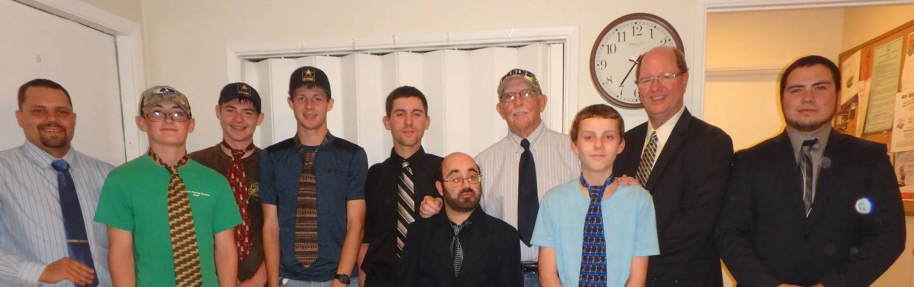

Who is behind the mob?
Our mentors are just a couple of ordinary guys who love what they do, helping young boys through the trials of life. All perspective mentors must first pass an intensive interview and reference process, which also includes a Washington State background check. Then new mentors are in a probation period of six months and have to partner up with another mentor. We have a two on one mentoring rule. Two mentors to one boy or one mentor to two boys can be together during any event sponsored by the M.O.B. There are certain occasions where one on one mentoring is allowed, but not until after probation period ends and the boys have been with us for the same amount of time. Most of our mentors have been invited to become a member and in most cases are known by members already involved. All of them have prior experience working with kids.
Marty Sausville, President
Hobbies: FISHING!, Camping, Fly Tying, Wrestling, Scrap Booking, Biking, Boating/Canoeing and Mini-Golf Favorite Memory: One campout James, Jared and Brian D. decided to teach Kevin B. how to play “Mission Impossible”. It was great to see those three take Kevin out and show him a good time. This took a great deal of respect and loyalty. Kevin had a wonderful time. Thanks Guys! Words of Wisdom: If you want respect, you had better give it. “A man with many friends, is a very friendly man.”
Zach Long, Vice-President

Hobbies: Hiking/Backpacking, Shooting, Time with my wife, Camping, Harley Cruising, Mentoring and Church Going Favorite Memory: Out of all of them, I would have to say the one that sticks in my mind the most would be target shooting with Scott. The adventure we had together of going through a “pond” in my wife's truck was a fun one. We had water over the hood and above the lower window line!! After we made it through, we were broke down for about two hours until our rescue arrived. What a day! Words of Wisdom: “If you could kick the person in the pants most responsible for your troubles, you wouldn't sit for a month!” -Theodore Roosevelt
Mark Nielson, Junior Vice-President
Hobbies: Photography, Cars, Tennis, Camping, Biking and Walking/Hiking. Favorite Memory: I love to sucker the boys into playing Horse with me as I can do many trick shots. One time a boy named Chamber (a fine young man I still miss) challenged me to a game, and I stood reverse to the hoop at the free throw line. I tossed it back for a swish! You should have seen Chamber's jaw drop! He took a shot at it, but sadly, he missed. I feel a little bad about how hard I laughed when I made that shot. I think Marty would have played it cooler, which would have been more effective. Clearly I myself still need mentoring. Words of Wisdom: If a man abandons his Mustang, it's not the Mustang that's stupid.
Nathan Tast, Mentor
Hobbies: Welding, and playing video games. Favorite Memory: Hanging out by the campfire on beach trips and camp-outs talking with the boys. Words of Wisdom: "This is for anybody going through times Believe, been there, done that But everyday above ground is a great day, remember that."
Joe Slaven, Mentor
Hobbies: Fishing and hunting. Favorite Memory: Doing fish camps with Marty at Tunnel Lake. Words of Wisdom: "As a dog returns to its vomit, so fools repeat their folly." -Proverbs 26:11